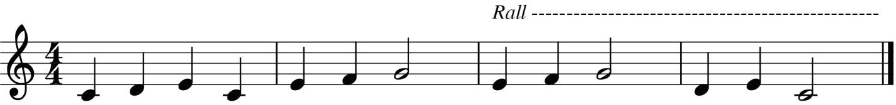
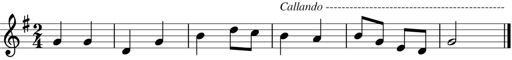
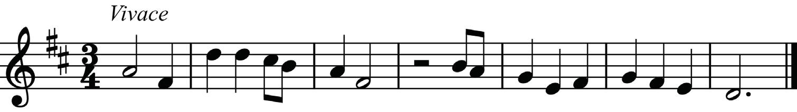
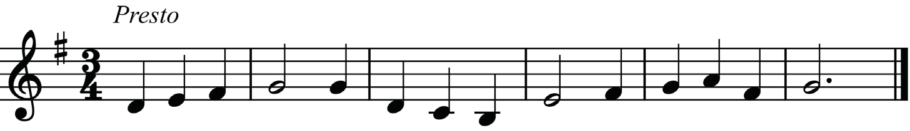

(b) Calando: This is a term that indicates changes in both tempo and volume.
Calando means that the tempo is gradually slowing down and the volume of the song is fading away or slowing down. Calando is also placed above the staff as shown in Figure 4.2.

(c) Vivace: This term indicates that a music piece is performed quickly, lively and energetically (120-168 BPM).
Vivace is placed either above the first measure to indicate the tempo or above the new section to indicate changes in tempo. Figure 4.3 shows an example of how vivace is applied to a melody.

(d) Presto: This is a term used to mean that a tempo is very fast (169-200 BPM).
Presto can be placed either above the first measure to indicate the tempo or above the new section to indicate changes in tempo. Figure 4.4 shows an example of how presto is applied to a melody.

(e) Largo: This is a term used for a very slow and broad tempo (40-60 BPM).
Largo can be placed either above the first measure to indicate the tempo or above the new section to indicate changes in tempo. Figure 4.5 shows an example of how largo is applied to a melody.